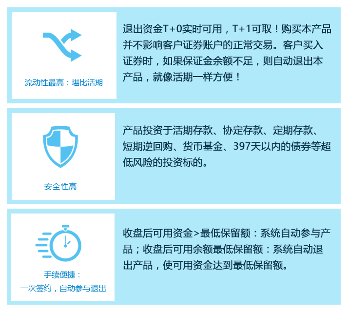

现金管家
万份收益（元）
3.02%
起购金额（元）
50.000
风险等级
低
产品特点

风险提醒
salaheiyuo
产品简介
{{charsObj.proIntro.proFeatures[0]}}
{{charsObj.proIntro.proFeatures[1]}}
{{charsObj.proIntro.proFeatures[2]}}
{{charsObj.proIntro.proFeatures[3]}}
基金公司简介
{{charsObj.fundCompanyIntro.text}}